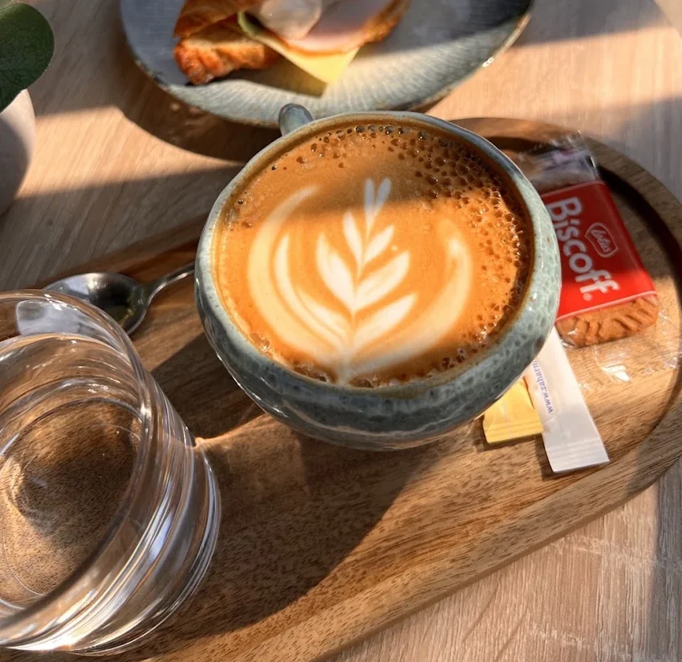
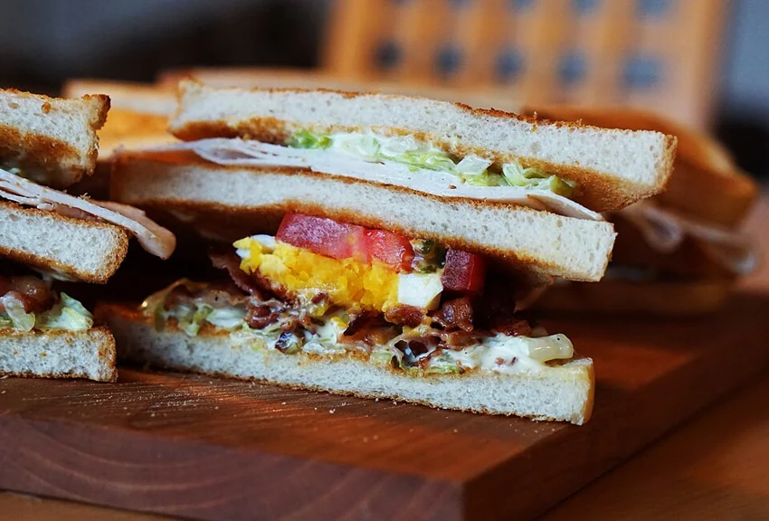
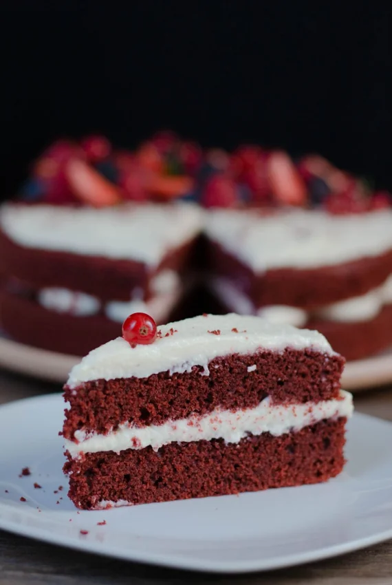

Cafea Meron
Espresso single
10 leiEspresso dublu
13 leiAmericano
10 leiEspresso macchiato
11 lei
Cappuccino
13 leiCappuccino grande
14 leiFlat white
15 leiLatte
17 lei
Fresh și limonadă

Fresh de portocale
17 leiFoto ilustrativă

Limonadă
14 leiFoto ilustrativă
Limonadă cu fructe
17 lei


Ceai și ciocolată
Ciocolată caldă
14 leiAlbă sau neagră

Matcha ceai
18 leiFoto ilustrativă
Ceai
14 leiChai latte
14 lei

Băuturi răcoritoare
Apă Dorna
10 leiCoca-Cola / Fanta / Sprite
10 leiFuze Tea / Cappy
10 lei
Sandvișuri și wraps

Club Sandwich
18 leiFoto ilustrativă
Rustic Focaccia
20 leiWrap vegetarian
16 leiDe post
Sandwich XL
20 lei
Croissante
Croissant sandwich
18 lei
Croissant umplut
16 leiBueno, Pistachio sau White Snow

Deserturi

Red Velvet Cake
18 leiFoto ilustrativă
Lotus Caramel Cake
18 leiCheesecake Oreo
19 leiTiramisu artizanal
19 lei